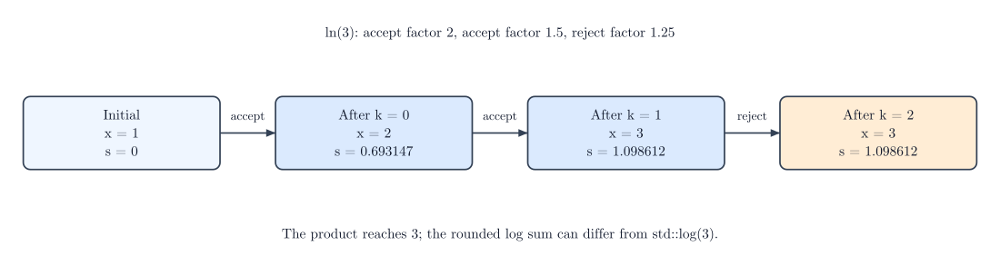
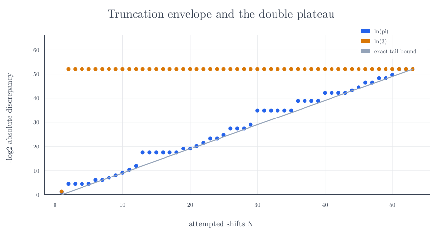

BKM-Style Logarithms and Exponentials: Factors, Truncation and Roundoff
Abstract
Approximate a natural logarithm or exponential by selecting small factors from a fixed table, while making the accepted and rejected choices visible. The restricted real algorithm in datamunge pairs a running product with a sum of logarithms. We retain the original numerical examples, derive a truncation envelope, and distinguish that exact-arithmetic argument from double rounding. The original ln(3) example reaches its product after two attempts; it does not gain another correct bit at every subsequent iteration.
The method
Let \(a_k=\log(1+2^{-k})\). Start with product x=1 and log sum s=0. At shift k, form the two candidates
For ln(v), accept the pair when x' is at most v. For exp(y), accept it when s' is at most y. Otherwise keep both state variables. In exact arithmetic, \(s=\log x\) is invariant because each accepted multiplication adds the logarithm of precisely that factor. Every k is an attempted digit, including rejections. Both interfaces and their traces use the same native loop.
The original BKM paper treats complex and signed digits. This report follows the repository's narrower real variant with digits zero or one and k=0,...,52. There is no range reduction: ln inputs must lie between 1 and the all-factors product, while exp inputs lie between 0 and the all-entries sum. The library computes those actual double endpoints and rejects nonfinite or out-of-range inputs instead of silently saturating.
Scaling by \(2^{-k}\) suggests shifts in fixed-point hardware. Here the code
uses double std::ldexp and additions, and generates the table with platform
std::log1p once. This is an inspectable numerical implementation; no hardware
throughput or correctly rounded elementary-function claim follows from it.
Simple example: ln(3)
At k=0 the product becomes 2, adding ln(2). At k=1 it becomes 3, adding ln(1.5). Their exact sum is ln(3). The next candidate is 3.75 and is rejected. Every later candidate is also above 3, so the running product stays at 3.
#include <dm/dm.hpp>
int main() {
std::filesystem::create_directories("build");
const auto trace=dm::algorithms::bkm_ln_trace(3,3);
dm::graphics::Diagram diagram(65,1100);
dm::graphics::DiagramNodeStyle style;style.width=3.9;style.height=1.4;
diagram.node("initial",{0,0},"Initial\nx = 1\ns = 0",style);
for (std::size_t i=0;i<trace.steps.size();++i) {
const auto& step=trace.steps[i];
style.fill=step.accepted?dm::RGB{219,234,254}:dm::RGB{255,237,213};
const auto id=std::format("step{}",i);
diagram.node(id,{5.*(i+1),0},std::format("After k = {}\nx = {}\ns = {:.6f}",step.shift,step.product,step.log_sum),style)
.edge(i?std::format("step{}",i-1):"initial",id,step.accepted?"accept":"reject");
}
diagram.text({7.5,2},"ln(3): accept factor 2, accept factor 1.5, reject factor 1.25")
.text({7.5,-2},"The product reaches 3; the rounded log sum can differ from std::log(3).");
diagram.save_svg("build/bkm_factors.svg");
}
Original examples and the finite domain
The following preserves all five logarithm and four exponential arguments from the original report. Standard-library discrepancies are numerical checks, not certificates of exact error; the independent development oracle below uses 100-digit decimal arithmetic as a further control.
#include <dm/dm.hpp>
int main() {
const auto domain=dm::algorithms::bkm_domain();
std::print("Supported ln interval: [1, {:.17g}]; exp interval: [0, {:.17g}]; terms: {}.\n\n",
domain.max_argument,domain.max_exponent,domain.terms);
std::print("| function | argument | native result | standard library | absolute discrepancy |\n"
"| :--- | ---: | ---: | ---: | ---: |\n");
for (double v:{1.5,2.,2.718281828,3.,4.5})
std::print("| ln | {:.9f} | {:.12f} | {:.12f} | {:.3e} |\n",v,
dm::algorithms::bkm_ln(v),std::log(v),std::abs(dm::algorithms::bkm_ln(v)-std::log(v)));
for (double y:{.25,.5,1.,1.5})
std::print("| exp | {:.9f} | {:.12f} | {:.12f} | {:.3e} |\n",y,
dm::algorithms::bkm_exp(y),std::exp(y),std::abs(dm::algorithms::bkm_exp(y)-std::exp(y)));
const auto trace=dm::algorithms::bkm_ln_trace(3);
const auto accepted=std::count_if(trace.steps.begin(),trace.steps.end(),[](const auto& step){return step.accepted;});
std::print("\nln(3): {} accepted factors out of {} attempts; final product {}.\n",
accepted,trace.steps.size(),trace.steps.back().product);
}Supported ln interval: [1, 4.7684620580627426]; exp interval: [0, 1.5620238332184999]; terms: 53.
| function | argument | native result | standard library | absolute discrepancy |
|---|---|---|---|---|
| ln | 1.500000000 | 0.405465108108 | 0.405465108108 | 0.000e+00 |
| ln | 2.000000000 | 0.693147180560 | 0.693147180560 | 0.000e+00 |
| ln | 2.718281828 | 0.999999999831 | 0.999999999831 | 1.110e-16 |
| ln | 3.000000000 | 1.098612288668 | 1.098612288668 | 2.220e-16 |
| ln | 4.500000000 | 1.504077396776 | 1.504077396776 | 4.441e-16 |
| exp | 0.250000000 | 1.284025416688 | 1.284025416688 | 0.000e+00 |
| exp | 0.500000000 | 1.648721270700 | 1.648721270700 | 0.000e+00 |
| exp | 1.000000000 | 2.718281828459 | 2.718281828459 | 0.000e+00 |
| exp | 1.500000000 | 4.481689070338 | 4.481689070338 | 0.000e+00 |
ln(3): 2 accepted factors out of 53 attempts; final product 3.
Checking the theory: what one more attempt can guarantee
With infinitely many exact factors, the remaining logarithm capacity after N attempts is
The remaining capacity covers the current digit: indeed \(\prod_{j>k}(1+2^{-j})>1+\sum_{j>k}2^{-j}=1+2^{-k}\), so \(a_k<T_{k+1}\). Initially the residual is within the whole capacity. If the greedy step accepts a_k, the residual falls into the next capacity; if it rejects, the residual is below a_k and hence also below that capacity. Induction gives a nonnegative log residual r_N below T_N. The finite 53-factor input interval is contained in this infinite-factor interval, so the same exact-arithmetic bound applies to its prefixes.
For logarithms, r_N is ln(v)-s_N. For exponentials it is y-ln(x_N), giving \(0\le1-x_N/e^y=1-e^{-r_N}\le r_N<T_N\). Thus worst-case truncation shrinks geometrically. This does not say that every accepted digit, or every attempt, improves the observed error by one bit. Exact factorisation can finish early, while rounded table entries, sums and products eventually dominate the tail.
#include <dm/dm.hpp>
int main() {
std::filesystem::create_directories("build");
std::vector<double> terms,bound,pi_terms,pi_bits,three_terms,three_bits;
unsigned zero_discrepancies=0;
for (int n=1;n<=53;++n) {
terms.push_back(n);bound.push_back(n-1);
const double pi_error=std::abs(dm::algorithms::bkm_ln_trace(std::numbers::pi,n).value-std::log(std::numbers::pi));
const double three_error=std::abs(dm::algorithms::bkm_ln_trace(3,n).value-std::log(3.));
if (pi_error>0) {pi_terms.push_back(n);pi_bits.push_back(-std::log2(pi_error));}
else ++zero_discrepancies;
if (three_error>0) {three_terms.push_back(n);three_bits.push_back(-std::log2(three_error));}
else ++zero_discrepancies;
}
dm::graphics::RPlot::create()
.points(pi_terms,pi_bits,"ln(pi)",dm::RGB{37,99,235},4)
.points(three_terms,three_bits,"ln(3)",dm::RGB{217,119,6},4)
.lines(terms,bound,"exact tail bound",dm::RGB{148,163,184},2)
.title("Truncation envelope and the double plateau")
.x_label("attempted shifts N").y_label("-log2 absolute discrepancy")
.y_limits(0,66).size(900,480).save_svg("build/bkm_convergence.svg");
std::print("Zero standard-library discrepancies omitted from the accuracy metric: {}.\n\n",zero_discrepancies);
std::print("| N | ln(pi) absolute discrepancy | exp(1) relative discrepancy | exact tail envelope |\n"
"| ---: | ---: | ---: | ---: |\n");
for (int n:{1,2,4,8,16,32,48,53})
std::print("| {} | {:.3e} | {:.3e} | {:.3e} |\n",n,
std::abs(dm::algorithms::bkm_ln_trace(std::numbers::pi,n).value-std::log(std::numbers::pi)),
std::abs(dm::algorithms::bkm_exp_trace(1,n).value/std::exp(1.)-1),std::ldexp(1.,1-n));
}Zero standard-library discrepancies omitted from the accuracy metric: 0.
| N | ln(pi) absolute discrepancy | exp(1) relative discrepancy | exact tail envelope |
|---|---|---|---|
| 1 | 4.516e-01 | 2.642e-01 | 1.000e+00 |
| 2 | 4.612e-02 | 2.642e-01 | 5.000e-01 |
| 4 | 4.612e-02 | 8.030e-02 | 1.250e-01 |
| 8 | 7.564e-03 | 7.552e-03 | 7.812e-03 |
| 16 | 5.579e-06 | 2.224e-05 | 3.052e-05 |
| 32 | 3.113e-11 | 2.369e-11 | 4.657e-10 |
| 48 | 2.887e-15 | 3.109e-15 | 7.105e-15 |
| 53 | 2.220e-16 | 0.000e+00 | 2.220e-16 |

Domain-wide numerical controls
The sweep below includes both domain endpoints and 255 interior points for each mode. Each prefix is obtained from the core API. We compare the largest logarithm absolute discrepancy and exponential relative discrepancy with the derived envelope, allowing 1e-14 for accumulated double and reference rounding. That allowance is a numerical test tolerance, separate from the exact bound.
#include <dm/dm.hpp>
int main() {
const auto domain=dm::algorithms::bkm_domain();
std::print("| N | maximum ln absolute discrepancy | maximum exp relative discrepancy | exact envelope |\n"
"| ---: | ---: | ---: | ---: |\n");
for (int n:{1,2,4,8,16,32,48,53}) {
double ln_error=0,exp_error=0;
for (int i=0;i<=256;++i) {
const double u=i/256.;
const double v=1+u*(domain.max_argument-1),y=u*domain.max_exponent;
ln_error=std::max(ln_error,std::abs(dm::algorithms::bkm_ln_trace(v,n).value-std::log(v)));
exp_error=std::max(exp_error,std::abs(dm::algorithms::bkm_exp_trace(y,n).value/std::exp(y)-1));
}
const double envelope=std::ldexp(1.,1-n);
if (ln_error>envelope+1e-14 || exp_error>envelope+1e-14) return 1;
std::print("| {} | {:.3e} | {:.3e} | {:.3e} |\n",n,ln_error,exp_error,envelope);
}
}| N | maximum ln absolute discrepancy | maximum exp relative discrepancy | exact envelope |
|---|---|---|---|
| 1 | 8.689e-01 | 5.806e-01 | 1.000e+00 |
| 2 | 4.634e-01 | 3.709e-01 | 5.000e-01 |
| 4 | 1.225e-01 | 1.153e-01 | 1.250e-01 |
| 8 | 7.802e-03 | 7.772e-03 | 7.812e-03 |
| 16 | 3.052e-05 | 3.052e-05 | 3.052e-05 |
| 32 | 4.657e-10 | 4.657e-10 | 4.657e-10 |
| 48 | 7.327e-15 | 6.994e-15 | 7.105e-15 |
| 53 | 6.661e-16 | 8.882e-16 | 2.220e-16 |
Native tests add 10,001-point long-double reference sweeps, every prefix length, trace replay, adjacent representable domain boundaries and nonfinite-input rejection. A separate development check reconstructs accepted products exactly and logarithm sums at 100 decimal digits, distinguishing finite-factor truncation from the implementation's rounding. None of these comparisons establish correct rounding for every double input.
Conclusion
The shared core now supplies checked scalar functions and actual candidate, acceptance, product and log-sum traces. The original examples retain their numerical agreement, while ln(3) correctly illustrates early factor completion and a rounding plateau. The geometric tail bound describes exact truncation; the measured double discrepancies expose its practical precision limit.
Each scalar call attempts 53 factors with constant auxiliary storage after table initialisation. Recording N attempts uses O(N) owned storage. General real arguments require a separately designed range reduction, and the full complex or signed-digit BKM construction is outside this API. Generated inputs suffice for these arithmetic properties; no observed dataset is needed.
References
- Bajard, J.-C., Kla, S. and Muller, J.-M. (1994). BKM: A New Hardware Algorithm for Complex Elementary Functions. IEEE Transactions on Computers, 43(8), 955–963. https://doi.org/10.1109/12.295857. Author's copy: https://perso.ens-lyon.fr/jean-michel.muller/BKM94.pdf. The restricted real greedy variant and its finite-double limits are analysed here separately from that full algorithm.